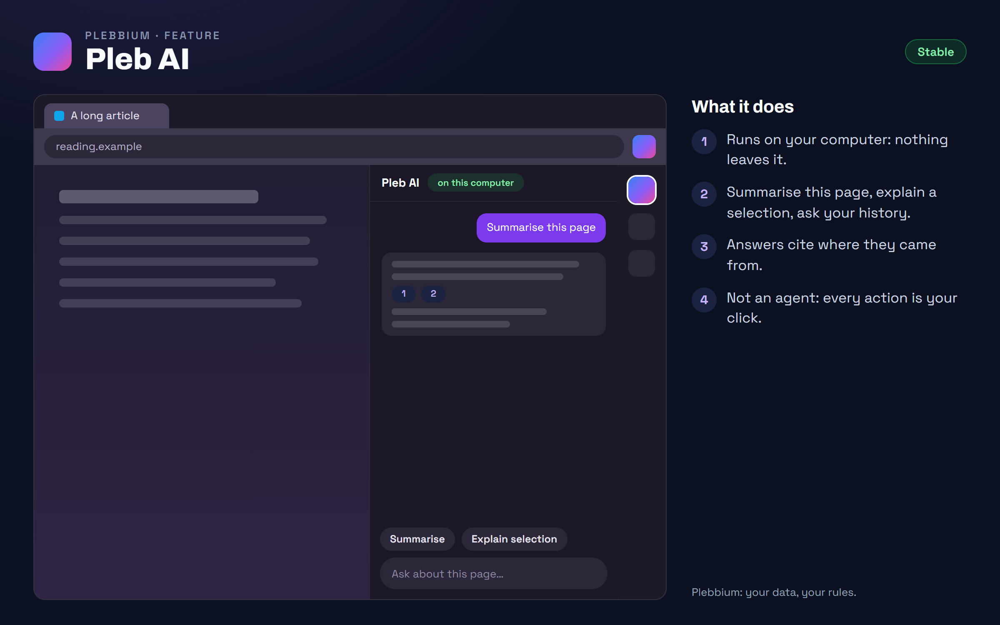

All features › Shipped › Pleb AI
Pleb AI
Stablesince 3604An AI that runs on your own computer, in the sidebar: summarise the page, explain a selection, or ask your reading history, with citations. It reads what you give it and never acts on a page by itself.

How to use it
- Open it: Alt+Shift+A, the sidebar, or the Pleb menu › Pleb AI.
- Summarise the page or explain a selection with one click.
- Ask what you've read: ? and a question in the Everything bar.
- It runs on Ollama on your computer: the optional Pleb AI download, beside Plebbium's installer, sets it up.
When it arrived
156.0.8078.360418 Oct 2026 · Beta and Stable
Pleb AI in the sidebar.
Why it works this way
Not an agent
Every AI browser tested in 2026 that acts on pages by itself was hijacked by instructions hidden in web pages. Pleb AI reads what you attach, and every action is your click.
On your computer
It runs on your own machine, so your pages and your history never leave it.